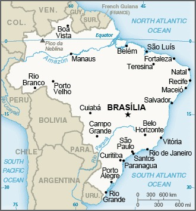

Genel Bilgiler
Brezilya, Güney Amerika’da yer alan federal cumhuriyettir. Başkenti Brasília’dır. Yaklaşık 216 milyon nüfusa sahiptir. Resmî dili Portekizce’dir ve para birimi Brezilya Reali (BRL)’dir. Brezilya, Güney Amerika’nın en büyük ülkesi olup, tarım, sanayi ve hizmet sektörlerinde bölgesel bir ekonomik liderdir.
Brezilya, kuzeyde Venezuela, Guyana, Surinam ve Fransız Guyanası, batıda Kolombiya, Peru, Bolivya ve Paraguay, güneyde Arjantin ve Uruguay ile çevrilidir; doğuda Atlas Okyanusu’na kıyısı vardır. Yüzölçümü yaklaşık 8.515.767 km²’dir. Ülke coğrafyası Amazon yağmur ormanları, Pantanal bataklıkları, yaylalar ve dağlık bölgelerden oluşur. Önemli nehirleri Amazon, São Francisco ve Paraná’dır.
Başkent: Brasília
Kıta: Güney Amerika
Yüzölçümü: 8.515.767 km²
Nüfus (2025): 216.000.000

Bayrak Anlamı: Brezilya bayrağı yeşil zemin üzerinde sarı bir elmas ve içinde mavi bir küre içerir; kürenin üzerinde beyaz bir bantta 'Ordem e Progresso' (Düzen ve İlerleme) yazısı vardır. Yeşil bitki örtüsünü, sarı zenginliği ve mavi gökyüzünü temsil eder. Slogan ulusal ilerleme ve düzeni simgeler. Bayrak 1889 yılında kabul edilmiştir.
Brezilya Haritası
Ekonomi
Brezilya ekonomisi tarım, sanayi ve hizmet sektörlerine dayanır. Tarımda kahve, soya, şeker kamışı ve et üretimi öne çıkar. Sanayi sektöründe otomotiv, havacılık, tekstil ve gıda işleme faaliyetleri yaygındır. Hizmet sektörü turizm, finans ve ticaret alanlarında ekonominin büyük kısmını oluşturur. Brezilya, doğal kaynakları ve biyolojik çeşitliliği ile ekonomik açıdan önemli bir ülkedir.
| Yıl | İhracat (Milyar $) | İthalat (Milyar $) |
|---|---|---|
| 2019 | 220 | 190 |
| 2020 | 210 | 170 |
| 2021 | 250 | 200 |
| 2022 | 280 | 230 |
| 2023 | 300 | 250 |